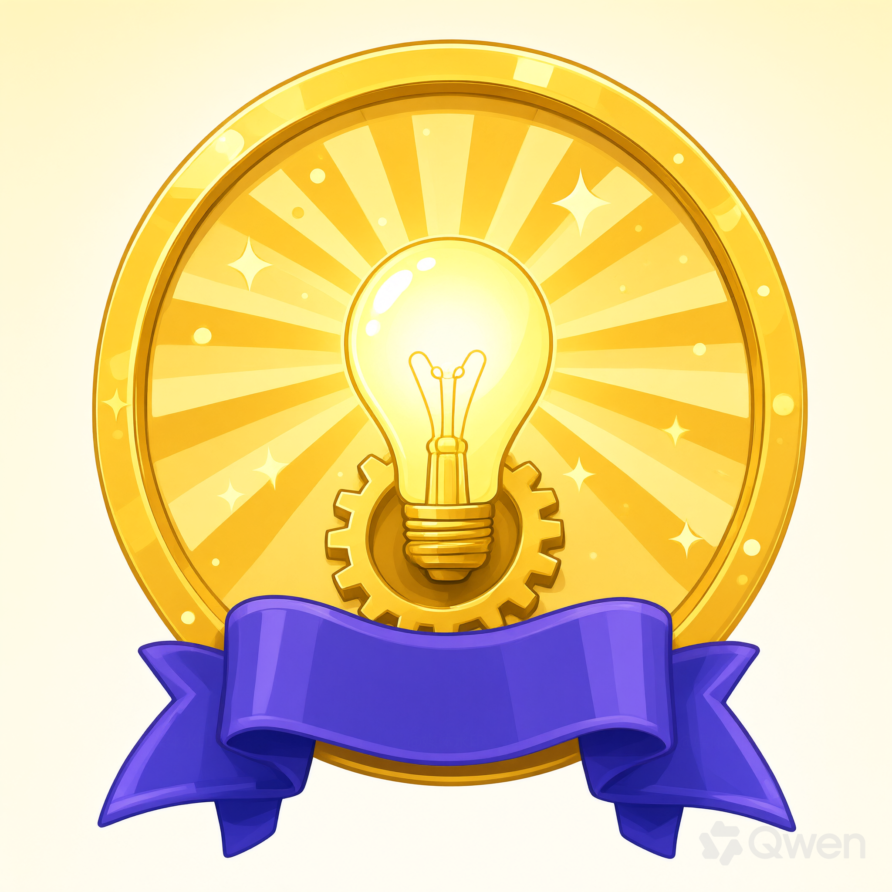

Выбери ответ. Если ошибёшься, прочитай подсказку и попробуй ещё раз.

Привет! Сегодня будем менять словесную одежду мысли, но следить, чтобы её смысл оставался прежним. Готов к логическим фокусам?
УРОК 6 · МАСТЕРСКАЯ МЫСЛЕЙ
Меняем слова — проверяем смысл!
Узнай, как распутывать сложные фразы, замечать важные слова, понимать «только» и «или», а ещё безопасно превращать и обращать суждения.
← Вернуться к выбору уроковФИНАЛЬНОЕ ИСПЫТАНИЕ
Большая проверка превращений
Задание 1 из 12⭐ 0
После ответа прочитай объяснение — оно поможет запомнить правило.
ПАУЗА ДЛЯ РАЗМЫШЛЕНИЯ
Ошибки — подсказки для ума!
Шпаргалка мастера мыслей
- Одну мысль можно сказать разными словами. Чтобы понять её, найди: о ком/о чём говорится и что именно сообщается.
- Смотри, к каким словам относится «не». «Не Маша взяла карандаш» и «Маша не взяла карандаш» — разные сообщения.
- «Все», «некоторые» и «этот» проверяй по смыслу, а не только по единственному или множественному числу.
- «Только» выделяет нужное условие: «Только выполнив задания, откроешь сундук» значит, что без заданий сундук не откроется.
- Условие можно сказать в разном порядке: «Если…, то…» и «…, если…». Слово «если» — подсказка, но всегда проверяй смысл.
- «Или» иногда предлагает варианты, которые могут сочетаться, а иногда — только один из них. Например, можно и петь, и танцевать.
- Превращение: меняем утвердительную форму на отрицательную или наоборот, используя «не» у связки и отрицание признака. Предметы и смысл должны сохраниться; не убирай и не добавляй «некоторые» или «все».
- Обращение: меняем местами предмет мысли и признак. Но «Все щенки — животные» не превращается в «Все животные — щенки»! Безопасный вывод: «Некоторые животные — щенки», если щенки есть.
МИССИЯ ВЫПОЛНЕНА
Мастер превращений!
Ты умеешь распутывать фразы и знаешь: слова можно переставлять, но смысл нужно беречь. Отличная работа!

В меню уроков